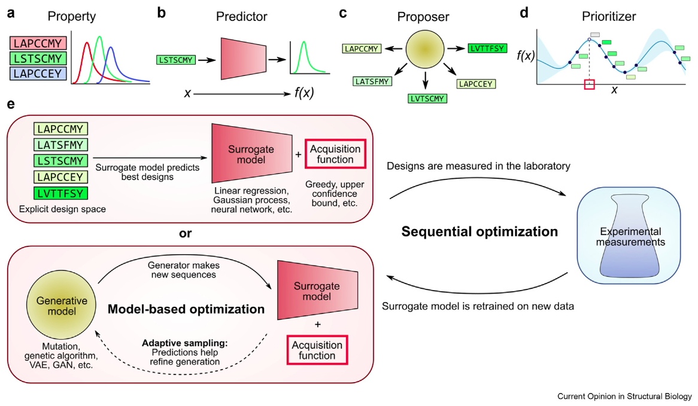
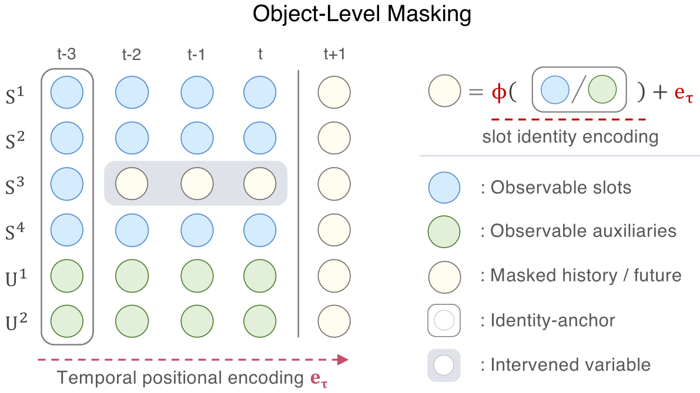
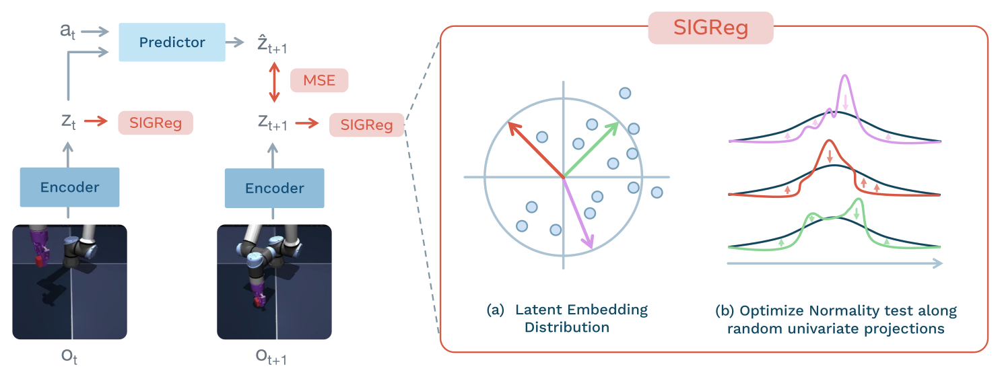
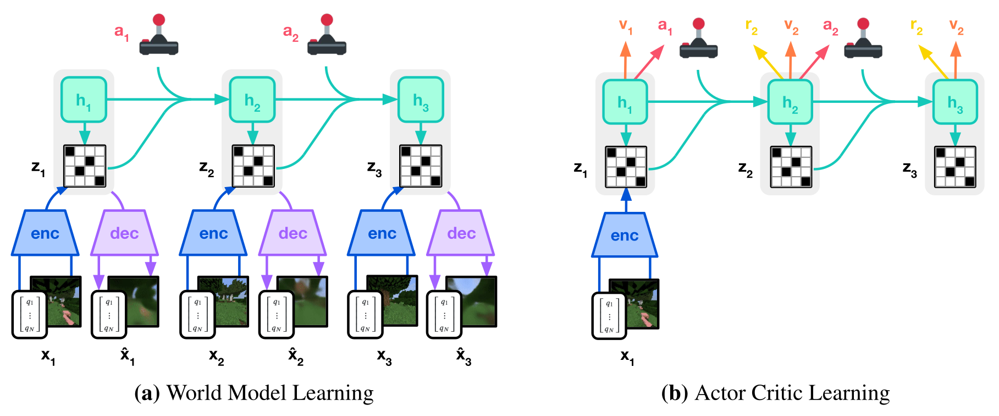
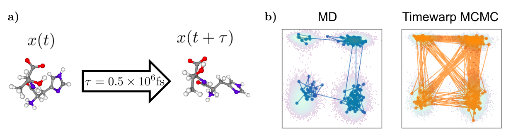
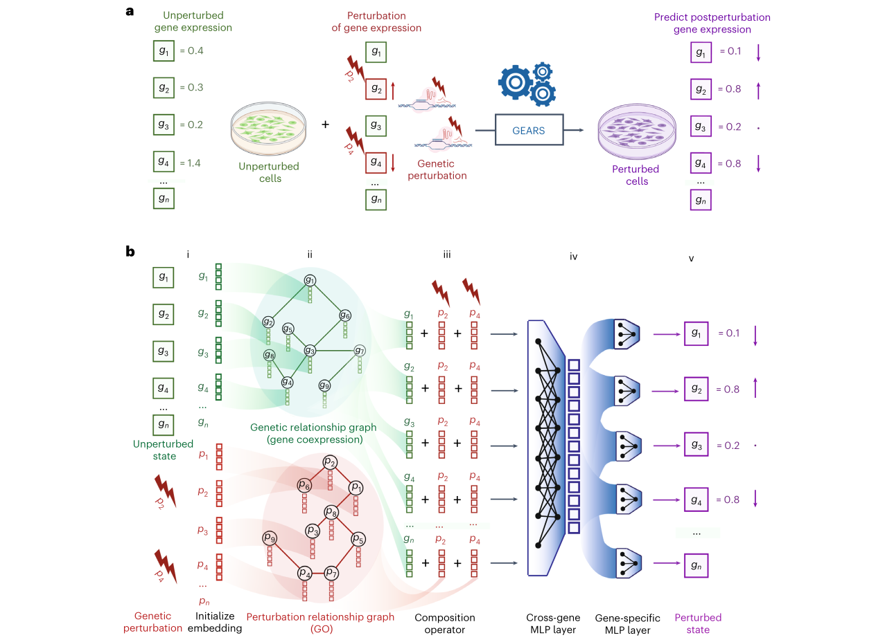

BioDreamer
World models for biological design, from atoms to cells.
The Problem
Biology is expensive to query. A molecular dynamics simulation of a single protein can take days on a GPU cluster. One round of directed evolution costs months and thousands of dollars. A genome-wide CRISPR screen requires millions of cells and weeks of work. Yet intelligent design at every biological scale demands exploring vast combinatorial spaces. For a protein of typical length $L = 300$, the sequence space is $20^{300}$. The fitness landscape over that space is rugged, epistatic, and only partially observed.
Two broad computational strategies have emerged. Generative protein design uses deep learning to produce candidate sequences in a single forward pass. ProteinMPNN [11] designs sequences conditioned on a fixed backbone. RFdiffusion [12] generates novel backbones through 3D denoising diffusion. ESM-3 [10] provides a multimodal foundation model that jointly reasons over sequence, structure, and function. These methods are powerful, but they are fundamentally one-shot. They generate a candidate and hope it works, with no mechanism for iterative refinement or multi-step planning. Directed evolution, the experimental counterpart, is sequential by nature (mutate, screen, select, repeat), yet current computational tools do not model it as a sequential decision-making problem.

Neither approach does what a thoughtful engineer would do. Build an internal model of how mutations reshape the fitness landscape, mentally simulate a sequence of edits, and only then commit to the lab.
A parallel development in artificial intelligence has produced agents that do exactly this kind of sequential planning. World model agents learn an internal simulator of their environment and train policies by imagining future trajectories. Ha and Schmidhuber [5] established the core idea with their tripartite architecture of spatial compression, temporal dynamics, and a compact controller. DreamerV3 [4] proved that a single world model architecture could master over 150 diverse environments with a single set of hyperparameters. More recently, the Joint-Embedding Predictive Architecture (JEPA) paradigm [1][2] has shown that world models can operate entirely in latent space without reconstructing observations, making them dramatically faster and more scalable.
Despite these advances, the world model paradigm has not been applied to biology. BioDreamer fills this gap. It is a unified research framework that applies world models to biological systems across three scales.
ProteinDreamer navigates protein fitness landscapes through dreaming. Given a wild-type protein and target properties (stability, affinity, catalytic activity), it plans multi-step mutation strategies by simulating their effects in a learned world model, guided by Active Inference for principled exploration.
MolDreamer operates at the atomic scale, learning molecular dynamics in latent space. Instead of integrating Newton's equations one femtosecond at a time, it jumps directly between important conformational states, predicting binding free energy and stability along the way.
CellDreamer plans cellular reprogramming strategies. Given a source cell state and a desired phenotype (say, converting a fibroblast into a cardiomyocyte), it dreams optimal perturbation sequences using a world model of gene regulatory dynamics.
The shared thesis is simple. Learn a latent-space simulator of each biological environment, then plan optimal interventions in imagination, replacing brute-force experimentation with intelligent in-silico reasoning.
Dreaming in Latent Space
All three BioDreamer modules share a common computational skeleton built on the JEPA paradigm. The recipe is direct. Encode observations into latent states, predict transitions in latent space conditioned on actions, and train policies on imagined trajectories. No decoder is needed during planning.
The architectural foundation comes from Causal-JEPA [1], which extends JEPA with a causal inductive bias. By moving from image-patch masking to object-level masking, the model is forced to infer an object's latent trajectory from the interactions with others, effectively inducing latent interventions with counterfactual-like effects. This prevents shortcut solutions like simple temporal interpolation, making interaction reasoning functionally necessary for minimizing the prediction objective. For BioDreamer, the analogy is natural. A mutation to a protein sequence is a causal intervention on the latent state, and the world model learns to predict how that intervention reshapes the protein's representation.

The practical training recipe comes from LeWorldModel [2], which solved the notorious instability of JEPAs with a clean two-term objective. A mean-squared error for next-latent prediction combined with the SIGReg regularizer, which prevents representation collapse by enforcing an isotropic Gaussian distribution on the latent space ($z_t \sim \mathcal{N}(0, I)$). SIGReg projects the batch of embeddings onto random unit-norm directions, tests univariate normality on each projection via the Epps-Pulley test, and aggregates via the Cramér-Wold theorem. It replaces VICReg's six-to-seven hyperparameters with a single scalar $\lambda_{\text{reg}}$, enabling end-to-end training on a single GPU with planning speeds up to 48 times faster than reconstruction-based methods.

BioDreamer offers two world model backends. The primary is a Latent Diffusion JEPA, which places a conditional denoising diffusion model inside the JEPA latent space. Given the current latent state $z_t$ and a mutation embedding $a_t^{\text{emb}}$, the diffusion predictor generates samples from $p_\theta(z_{t+1} | z_t, a_t)$ through iterative denoising. This captures the multi-modal, stochastic nature of biological fitness landscapes, where a single mutation can lead to distinct structural or functional outcomes depending on context. The architecture extends the insight from DIAMOND [3], which showed that diffusion-based world models produce more accurate long-horizon rollouts than deterministic alternatives. Moving this diffusion process from observation space to JEPA latent space yields the massive efficiency gains behind Latent Diffusion Models in image generation.
The alternative is an Energy-Based JEPA, a deterministic Transformer that maps $(z_t, a_t^{\text{emb}})$ to $\hat{z}_{t+1}$ in a single forward pass, trained with prediction loss and SIGReg. It is faster for rapid screening but averages over modes. In practice, the natural progression is to start with the Energy-Based variant for initial experiments and upgrade to the Latent Diffusion variant for final design campaigns.

The theoretical backbone is Active Inference [6], a framework from computational neuroscience where agents select actions to minimize expected free energy $G(\pi)$. This objective decomposes naturally into two terms. Pragmatic value drives the agent toward high-fitness states, serving as exploitation. Epistemic value drives the agent toward mutations about which the world model is most uncertain, serving as exploration.
$$G(\pi) = \underbrace{\mathbb{E}_{q}\left[\sum_{t=1}^{H} -r_t\right]}_{\text{Pragmatic value}} + \underbrace{\mathbb{E}_{q}\left[\sum_{t=1}^{H} -\eta \cdot \text{Unc}(z_t, a_t)\right]}_{\text{Epistemic value}}$$Tschantz et al. [7] showed how minimizing expected free energy naturally subsumes both reward maximization and information gain into a single objective, providing a practical recipe for implementing active inference with neural networks. The deep connection to JEPA is that both frameworks minimize variational free energy. The JEPA energy $E_\theta(z_t, a_t, z_{t+1})$ scores prediction consistency in latent space, which is mathematically analogous to the prediction error in variational free energy. This means the world model, the policy, and the exploration strategy all derive from a single variational principle.
ProteinDreamer
ProteinDreamer is the core module of BioDreamer. It frames protein design as a Markov Decision Process where an agent proposes mutations (actions), observes changes in a learned latent representation of the protein (state transitions), receives fitness predictions (rewards), and plans entire mutation trajectories in imagination before committing to evaluation.
The state $s_t$ consists of the current amino acid sequence $\mathbf{x}_t \in \{A, C, D, \ldots, Y\}^L$, its predicted 3D structure from ESMFold (C$\alpha$ coordinates), and associated property estimates like pLDDT confidence and contact maps. The action $a_t$ is a single-site substitution $(i, \text{AA}_{\text{new}})$ at position $i$. Multi-mutant designs emerge from chaining multiple single-step substitutions over a trajectory of horizon $H$. The reward $r_t$ comes from a multi-task fitness head predicting stability ($\Delta\Delta G$), binding affinity ($K_d$), and catalytic activity ($k_{\text{cat}}$).
The encoder combines two complementary streams. A pre-trained ESM-2 [8] (650M parameters) processes the amino acid sequence to produce per-residue embeddings $\mathbf{H}^{\text{seq}} \in \mathbb{R}^{L \times 1280}$, which are mean-pooled to a global vector. A trainable GVP-GNN processes the predicted 3D structure, capturing geometric constraints through rotationally equivariant message passing on the protein graph. The two global vectors are concatenated and projected through a fusion MLP into the final latent state $z_t \in \mathbb{R}^d$ (with $d \approx 256$–$512$), regularized by SIGReg to enforce $z_t \sim \mathcal{N}(0, I)$. A target encoder, an exponential moving average copy of the context encoder, provides stable prediction targets during training.
The world model then predicts what happens after a mutation. Given $z_t$ and a continuous mutation embedding $a_t^{\text{emb}}$ (encoding the position and amino acid identity), the Latent Diffusion JEPA generates samples from $p_\theta(z_{t+1} | z_t, a_t)$ via iterative denoising in the compact latent space. By sampling $N$ denoising trajectories, the model produces a distributional estimate whose variance directly quantifies prediction uncertainty. This built-in uncertainty feeds the Active Inference exploration mechanism without requiring external modules. The training loss combines a denoising score-matching objective, SIGReg regularization, and a supervised reward loss grounded in experimental fitness measurements.
$$\mathcal{L}_A = \beta_{\text{diff}} \cdot \mathbb{E}_{\tau, \varepsilon}\left[\left\|D_{\hat{\theta}}(\bar{z}_{t+1}^{\tau}, \tau, z_t, a_t^{\text{emb}}) - \bar{z}_{t+1}\right\|_2^2\right] + \lambda_{\text{reg}} \cdot \text{SIGReg}(z_t) + \beta_{\text{rew}} \cdot \mathcal{L}_{\text{rew}}$$For the policy, an actor-critic system is trained entirely on imagined trajectories. Every $N_{\text{imagine}}$ steps, the policy rolls out $H$ mutation steps inside the world model, collecting predicted rewards and uncertainty estimates. The actor outputs a categorical distribution over mutations. The critic estimates the expected negative free energy from each state, with targets computed via TD($\lambda$) returns on the imagined data.
During inference, the system encodes a wild-type protein, dreams $C$ candidate mutation trajectories of length $T$, scores each endpoint through the reward head, and returns a ranked set of designed sequences. All planning occurs in latent space. No decoder or structure predictor is invoked during imagination.
The key distinction from existing approaches is this. Generative models like ProteinMPNN [11], RFdiffusion [12], EvoDiff [13], and ESM-3 [10] produce candidates in one forward pass with no iterative planning. RL-based methods like μProtein [14] use fitness predictors as black-box rewards with no learned dynamics and no latent-space planning. GFlowNets [15] offer diversity-seeking sampling proportional to reward, and within ProteinDreamer's modular framework they represent an alternative policy class for applications prioritizing sequence diversity. ProteinDreamer fills the remaining gap by learning a full world model that predicts how mutations reshape the landscape and a policy that plans trajectories toward desired properties.
Training data comes from ProteinGym [20] (217 substitution deep mutational scanning assays across diverse protein families), the Tsuboyama mega-scale stability dataset [21] (over 776,000 $\Delta G$ measurements across 479 domains), ESMFold-predicted structures as cheap structure oracles [8], and AlphaFold2 [9] predicted structures for validation. Evaluation will use held-out ProteinGym assays, and multi-step planning will be validated on known evolutionary paths like TEM-1 β-lactamase resistance evolution.
MolDreamer
At the atomic scale, classical molecular dynamics simulations remain the standard tool for understanding protein motion, ligand binding, and conformational change. The bottleneck is computational. Simulating microseconds of biologically relevant dynamics can take days on GPU clusters, and many important processes like folding and binding occur over timescales of milliseconds or beyond. ML surrogates like MACE [16] have accelerated force evaluation through higher-order equivariant message passing, achieving high precision with only two message-passing iterations. But even with fast force fields, the simulation still integrates Newton's equations one femtosecond at a time.
MolDreamer takes a different approach. Instead of replacing the force field alone, it replaces the entire simulation pipeline with a learned world model in latent space.

The scientific precedent comes from Timewarp [17], which demonstrated that normalizing flows can learn "time-coarsened" jumps, transitioning directly between distant conformational states while maintaining physical correctness through a Metropolis-Hastings acceptance step against the Boltzmann distribution.
$$A(x' | x) = \min\left(1, \frac{p(x') \, q(x | x')}{p(x) \, q(x' | x)}\right)$$MolDreamer generalizes this idea into a full world model framework. An SE(3)-equivariant GNN encoder compresses atomic coordinates into a latent state $z_t$. A latent diffusion or neural SDE dynamics model evolves $z_t \to z_{t+1}$, potentially with variable step sizes and time-coarsened jumps. A decoder reconstructs coordinates and observables (unlike ProteinDreamer, MolDreamer requires a decoder because MD applications often need explicit 3D coordinates). A reward model predicts properties of interest like binding free energy ($\Delta G$), thermostability ($T_m$), and solvent-accessible surface area. A policy then proposes mutations or simulation parameters to optimize the reward, all within the learned latent simulator.
The promise is this. By dreaming significant molecular structural changes rather than integrating every femtosecond, MolDreamer could make long-timescale molecular insights accessible to labs without supercomputer budgets.
CellDreamer
At the cellular scale, understanding and controlling gene regulatory dynamics is essential for drug discovery, cell therapy, and synthetic biology. Classical approaches to modeling gene regulatory networks, from Boolean networks to ODE systems, struggle to scale to the thousands of genes that interact in real cells. Recent ML models like GEARS [18] have made important progress, becoming the first model to successfully predict the transcriptional outcomes of perturbing gene combinations that were never seen during training. GEARS achieves this by integrating single-cell RNA-sequencing data with a biological knowledge graph, allowing the model to generalize across the gene interaction network.

Yet GEARS and related models are fundamentally steady-state predictors. They map a perturbation to a final expression profile without modeling the temporal trajectory of how the cell transitions between states. This matters because cellular reprogramming and drug response are dynamic, time-dependent processes. Knowing the endpoint is useful, but planning the optimal sequence of interventions to get there requires modeling the dynamics.
CellDreamer frames gene regulatory dynamics as a sequential environment. The encoder maps a single-cell transcriptomic snapshot to a latent cell state $z_t$ through a variational autoencoder. A dynamics model, implemented as a neural ODE or SDE conditioned on perturbation actions, evolves $z_t \to z_{t+\Delta t}$ over time. Actions include gene knockouts via CRISPRi/a, drug treatments at specific doses and timepoints, and multi-gene combinations. The reward captures distance to a user-defined target cell state.
The key training resource is Replogle et al.'s genome-scale Perturb-seq dataset [19], which mapped the transcriptional effects of genetic perturbations across over 2.5 million human cells by combining CRISPR interference with single-cell RNA sequencing. This information-rich genotype-phenotype map covers nearly all expressed genes, providing CellDreamer with the data to learn global rules of gene regulatory dynamics. Where GEARS predicts a single steady-state outcome, CellDreamer dreams entire perturbation trajectories, planning optimal multi-step intervention strategies to drive cells toward desired phenotypes.
Looking Ahead
BioDreamer is still early. The core hypotheses remain to be validated empirically. Can a JEPA world model learn an accurate simulator of protein fitness landscapes? Does the latent diffusion variant outperform the deterministic predictor on rugged, epistatic landscapes? Does Active Inference provide a principally better exploration strategy than standard RL heuristics for biological design? These are open experimental questions.
The broader vision is a framework where computational biologists specify a target (a more stable enzyme, a stronger binder, a desired cell fate) and the system plans a sequence of interventions in imagination, then proposes the most promising candidates for experimental validation. Each round of experimental data refines the world model, closing the loop between in-silico reasoning and wet-lab reality [22].
Biological systems are complex, high-dimensional, and expensive to query. But they are also governed by learnable physical and statistical regularities. World models have demonstrated across dozens of domains that learning an internal simulator and planning in imagination can replace brute-force interaction with intelligent reasoning. BioDreamer is a bet that the same principle applies to the most complex systems we know.
References
- Nam, H., Lidec, Q. L., Maes, L., LeCun, Y. & Balestriero, R. (2026). Causal-JEPA: Learning World Models through Object-Level Latent Interventions. arXiv preprint arXiv:2602.11389.
- Maes, L., Lidec, Q. L., Scieur, D., LeCun, Y. & Balestriero, R. (2026). LeWorldModel: Stable End-to-End Joint-Embedding Predictive Architecture from Pixels. arXiv preprint arXiv:2603.19312.
- Alonso, E., Jelley, A., Micheli, V., Kanervisto, A., Storkey, A., Pearce, T. & Fleuret, F. (2024). Diffusion for world modeling: Visual details matter in Atari. Advances in Neural Information Processing Systems, 37, 58757–58791.
- Hafner, D., Pasukonis, J., Ba, J. & Lillicrap, T. (2023). Mastering diverse domains through world models. arXiv preprint arXiv:2301.04104.
- Ha, D. & Schmidhuber, J. (2018). World models. arXiv preprint arXiv:1803.10122.
- Parr, T., Pezzulo, G. & Friston, K. J. (2022). Active inference: the free energy principle in mind, brain, and behavior. MIT Press.
- Tschantz, A., Millidge, B., Seth, A. K. & Buckley, C. L. (2020). Reinforcement learning through active inference. arXiv preprint arXiv:2002.12636.
- Lin, Z., Akin, H., Rao, R., Hie, B., Zhu, Z., Lu, W., … & Rives, A. (2023). Evolutionary-scale prediction of atomic-level protein structure with a language model. Science, 379(6637), 1123–1130.
- Jumper, J., Evans, R., Pritzel, A., Green, T., Figurnov, M., Ronneberger, O., … & Hassabis, D. (2021). Highly accurate protein structure prediction with AlphaFold. Nature, 596(7873), 583–589.
- Hayes, T., Rao, R., Akin, H., Sofroniew, N. J., Oktay, D., Lin, Z., … & Rives, A. (2025). Simulating 500 million years of evolution with a language model. Science, 387(6736), 850–858.
- Dauparas, J., Anishchenko, I., Bennett, N., Bai, H., Ragotte, R. J., Milles, L. F., … & Baker, D. (2022). Robust deep learning–based protein sequence design using ProteinMPNN. Science, 378(6615), 49–56.
- Watson, J. L., Juergens, D., Bennett, N. R., Trippe, B. L., Yim, J., Eisenach, H. E., … & Baker, D. (2023). De novo design of protein structure and function with RFdiffusion. Nature, 620(7976), 1089–1100.
- Alamdari, S., Thakkar, N., Van Den Berg, R., Tenenholtz, N., Strome, R., Moses, A. M., … & Yang, K. K. (2023). Protein generation with evolutionary diffusion: sequence is all you need. BioRxiv, 2023-09.
- Sun, H., He, L., Deng, P., Liu, G., Zhao, Z., Jiang, Y., … & Liu, T. Y. (2025). Accelerating protein engineering with fitness landscape modelling and reinforcement learning. Nature Machine Intelligence, 7(9), 1446–1460.
- Jain, M., Bengio, E., Hernandez-Garcia, A., Rector-Brooks, J., Dossou, B. F., Ekbote, C. A., … & Bengio, Y. (2022). Biological sequence design with GFlowNets. ICML 2022, pp. 9786–9801.
- Batatia, I., Kovacs, D. P., Simm, G., Ortner, C. & Csányi, G. (2022). MACE: Higher order equivariant message passing neural networks for fast and accurate force fields. Advances in Neural Information Processing Systems, 35, 11423–11436.
- Klein, L., Foong, A., Fjelde, T., Mlodozeniec, B., Brockschmidt, M., Nowozin, S., … & Tomioka, R. (2023). Timewarp: Transferable acceleration of molecular dynamics by learning time-coarsened dynamics. Advances in Neural Information Processing Systems, 36, 52863–52883.
- Roohani, Y., Huang, K. & Leskovec, J. (2022). GEARS: Predicting transcriptional outcomes of novel multi-gene perturbations. BioRxiv, 2022-07.
- Replogle, J. M., Saunders, R. A., Pogson, A. N., Hussmann, J. A., Lenail, A., Guna, A., … & Weissman, J. S. (2022). Mapping information-rich genotype-phenotype landscapes with genome-scale Perturb-seq. Cell, 185(14), 2559–2575.
- Notin, P., Kollasch, A., Ritter, D., Van Niekerk, L., Paul, S., Spinner, H., … & Marks, D. (2023). ProteinGym: Large-scale benchmarks for protein fitness prediction and design. Advances in Neural Information Processing Systems, 36, 64331–64379.
- Tsuboyama, K., Dauparas, J., Chen, J., Laine, E., Mohseni Behbahani, Y., Weinstein, J. J., … & Rocklin, G. J. (2023). Mega-scale experimental analysis of protein folding stability in biology and design. Nature, 620(7973), 434–444.
- Hie, B. L. & Yang, K. K. (2022). Adaptive machine learning for protein engineering. Current Opinion in Structural Biology, 72, 145–152.